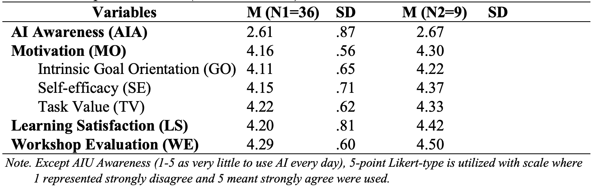
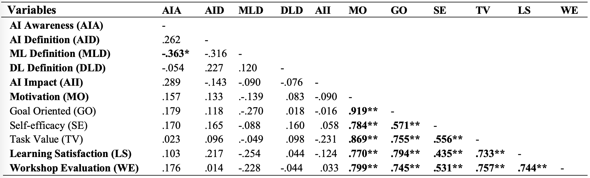

Title: Learning Experience with Artificial Intelligent (AI) in K-12: A Case Study of A Middle School AI Exploration Day |
Results
Among the 57 participants, 36 students responded to the Workshop Feedback Survey and 9 out of 36 students were the 1st, 2nd, and 3rd places winners in the AI-PBL competition. Prior to the path analysis, the assumptions of normality, linearity, multicollinearity, and homoscedesticity were examined and found to be satisfactory. Also, there were no univariate outliers found. Thus, no cases were excluded for a total of 36 cases. Descriptive statistics for the variables, including AI awareness, Motivation (including intrinsic goal orientation, self-efficacy, and task value), Learning Satisfaction, and Workshop Evaluation were obtained and are presented in Table 2. The mean value of AIA indicates that students’ perception of their AI awareness level is in the lower bound before participating in the workshop. The mean values of Motivation (MO), Learning Satisfaction (LS), and Workshop Evaluation (WE) are above 4.16 which indicate students’ overall high motivation of learning AI technologies, and high learning satisfaction and workshop evaluation of learning on the AI Exploration Day. To compare students who won the awards in the competition with other students, students won the awards have higher mean values of motivation to learn AI technologies and higher learning satisfaction and workshop evaluation scores of learning in the workshop while their perception of AI awareness seems to have not much difference.

The frequency of students’ responses to examine students’ knowledge of AI technologies were examined. According to Figure 1, above 58.33% of students were able to define AI correctly, while 77.78% of students and 83.33% of students were able to define Machine Learning and Deep Learning correctly. To compare the students with awards, the percentage of students who had correct responses to the knowledge-based definitions tends to be higher than the overall students’ responses (Figure 1).
Figure 1a. Prior Knowledge Checking
Students were asked what 5 words they can think about when talking about AI. Here are the visualization of the frequency of words that were identified by students.
Tool: https://wordart.com/create

Figure 1b. Post Knowledge Checking
According to Table 3, the correlations of all the variables were examined. The results indicate that students’ perception of their original lower AI awareness level (before participating in the workshop) is not significantly correlated to most of the variables (AID, DLD, AII, MO, LS, and WE), except students’ accurate response to definition of machine learning. The correlation value of -.363 between the original AI awareness level and accurate response to definition of machine learning indicates a moderate negative linear relationship, which means students perceived themselves with lower AI awareness level before the workshop tends to have accurate definitions of machine learning. Students’ responses to the knowledge-based concepts do not show the significant correlation to their motivation of learning AI technology and learning satisfaction and workshop evaluation score of the workshop experience. Additionally, there are significant positive correlations among motivation of learning AI technologies, learning satisfaction, and workshop evaluation score. It indicates that students with higher learning motivation tend to perceive higher learning satisfaction of the workshop activities and workshop evaluation score, and vice versa.
Table 3 Correlations among Social Constructs (N=36)

After completing the workshop, students were found to have better understanding of AI technologies, their awareness level of potential benefits, risks, challenges, and ethical concerns of AI technologies were examined. According to Figure 2, students were able to recognize the potential benefits accurately. Above 83.33 (30/36) students were able to successfully identify the potential benefits of AI technologies successfully, while 47.22% (17/36) of students were able to identify all the potential risks/challenges of AI technologies and 80.56% of students were able to identify at least 3 potential risks and challenges.
Figure 2. Potential Benefits and Risks of AI Technologies
Based upon Figure 3, students were able to recognize the ethical concerns successfully after participating in the workshop. Except the option 1 regarding to using AI technology to create autonomous weapons, above 52.78% of students were able to identify all the other ethical concerns of AI application in the real world. For future impact of AI technologies, 97.22% of students confirmed that AI have a significant impact on their future career and daily life. Students identified 5 aspects which have most impact for the future career and life. Particularly, direct impact to their daily life experience has been recognized by 54.29% of students.
Figure 3a. Ethical Concerns AI Technologies
Figure 3b. Future Impact of AI Technologies
Last, for the overall learning satisfaction of all the 4 stations (Figure 4), above 52.78% of students valued what they learned from all the stations. Particularly, 69.44% of students rated station 1 as valuable station while 61.11% of students rated station 2 as the second valuable station.